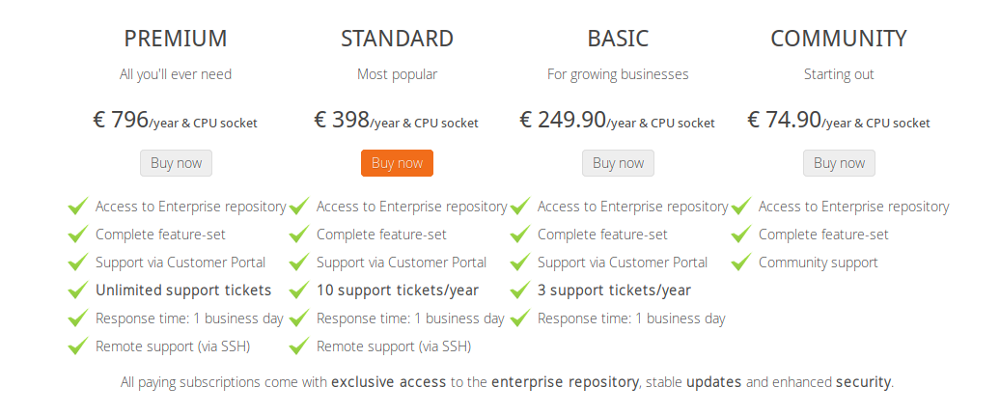

Proxmox es un software que permite la creación y gestión de maquinas virtuales OpenVZ y KVM para la visualización de entorno servidor.
Dispone de una versión de pago con algunas complementos, dependiendo del tipo de suscripción que se elija, y otra gratuita.
Para desarrollar nuestro proyecto utilizaremos la versión gratuita, puesto que proporciona todo lo que necesitamos para la realización del reto.
Se pueden consultar sus requerimientos en su sitio web oficial.
Hardware Recomendado:
Hardware Mínimo:
Medios de Instalación:
Se inserta el disco y tras arrancar el instalador se elije la opción de Install Proxmox VE (instalación normal).
Después bastara con seguir los pasos y rellenar los campos necesarios para la configuración.
Es necesario un USB de mínimo 1GB de memoria. Tenga en cuenta que se borraran todos los datos que contenga.
Para la instalación sobre Debian siga las intrucciones de la pagina oficial.